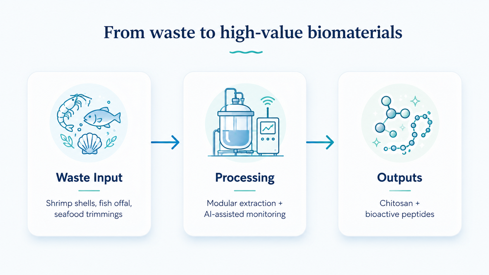
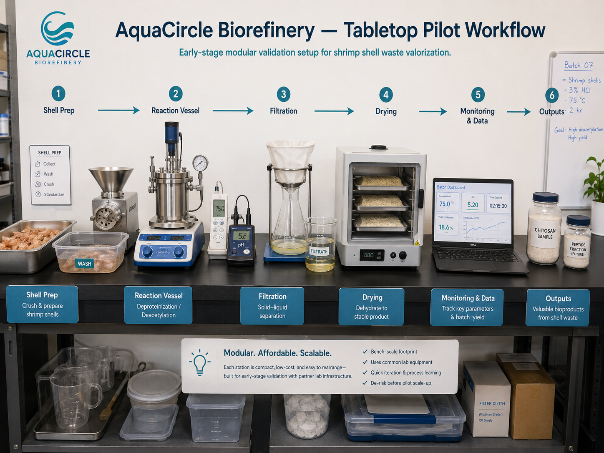
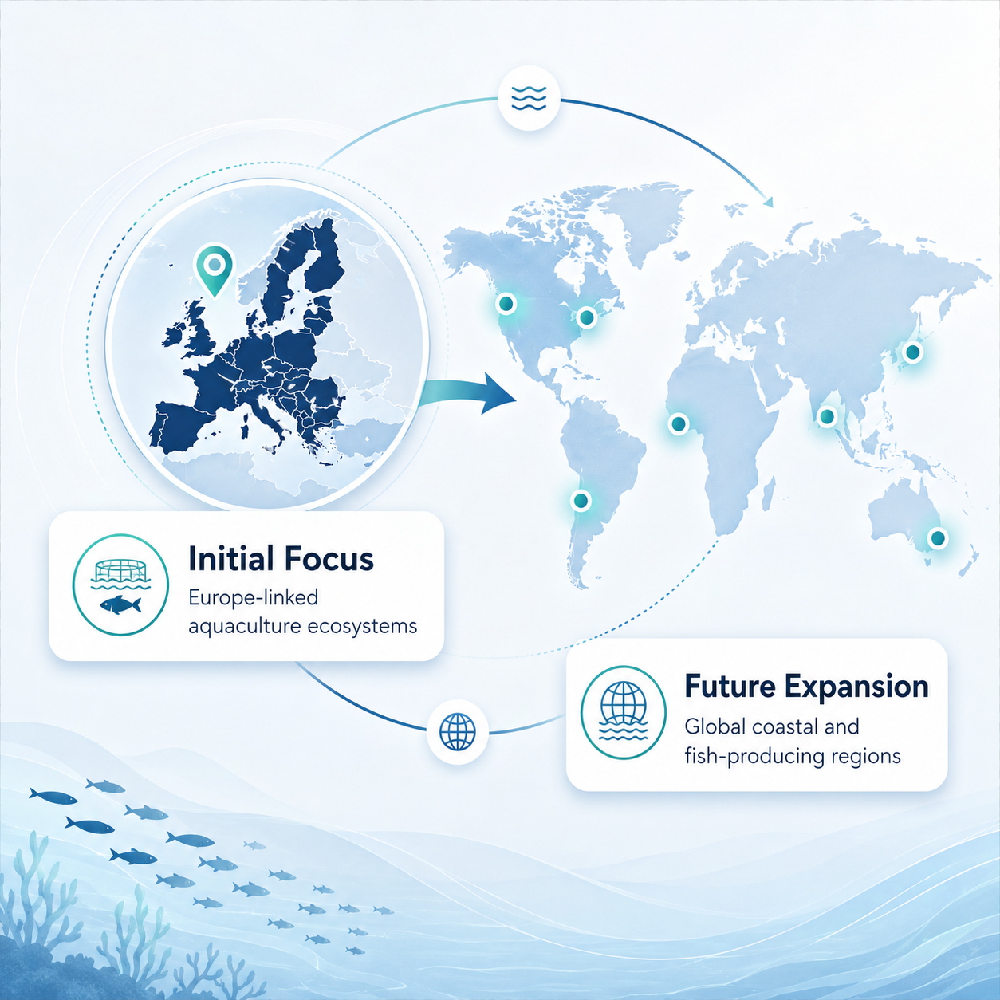
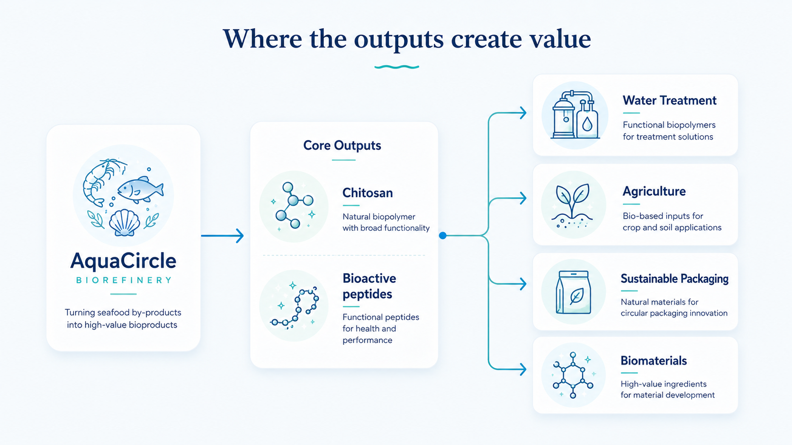

Disposal costs
Many producers pay to remove shells, offal, and trimmings, creating recurring expense without recovery of material value.
AquaCircle Biorefinery is developing modular bioprocessing units that transform aquaculture and seafood by-products into high-value chitosan and bioactive peptides.
Compact processing for coastal sites, designed to help small and medium producers create value from waste.Aquaculture and seafood processing generate large volumes of organic by-products that are often underused, poorly managed, or disposed of at low value. For small and medium producers, waste can become a cost center instead of a source of circular value.
Many producers pay to remove shells, offal, and trimmings, creating recurring expense without recovery of material value.
High-value compounds such as chitosan and peptides remain locked in waste streams instead of being reused in health, materials, and feed applications.
Uneven waste handling raises emissions, nutrient loads, and disposal risk for coastal communities and nearby aquaculture ecosystems.
AquaCircle brings compact modular processing closer to farms, processors, and coastal production hubs. The system is designed to convert shrimp shells, fish offal, and seafood trimmings into useful outputs such as chitosan and bioactive peptides.

The system aims to monitor variables such as temperature, pH, timing, and yield to improve consistency and simplify operation for early-stage coastal producers.
Compact units are built for coastal sites, small farms, and processing hubs where space and flexibility matter.
Sensors track key process values in real time so teams can maintain quality and act quickly during production.
Designed to support future process optimization by tracking variables such as temperature, pH, timing, and yield.
The design emphasizes reliable chitosan and peptide yield so partners can use outputs with confidence.
AquaCircle begins with a modular, low-cost validation setup using standard lab equipment before scaling to deployable units.

Target customers include fish farms, seafood processors, cooperatives, and coastal processing hubs looking to turn organic by-products into revenue rather than waste.

AquaCircle's approach is designed to support a circular value chain, reduce disposal pressure, and create new income opportunities for coastal producers.

Turning organic by-products into useful biomaterials helps coastal operations capture value from residual streams.
Small and medium operators gain access to revenue from chitosan, peptides, and circular product flows.
Local processing lowers waste transport, improves compliance, and supports cleaner coastal production.
The solution aligns with regenerative aquaculture goals by turning waste into measurable circular value.
Founder, AquaCircle Biorefinery
Aquaculture Scientist & AI Developer
Saheed holds an MSc in Aquaculture and Fisheries from Istanbul University and has hands-on experience with fish reproduction, hatchery systems, fieldwork, and technical product development.
The founder combines aquaculture research experience with practical AI/product development, creating a strong bridge between sector knowledge and technology execution.
AquaCircle Biorefinery was selected as a finalist for the Ocean Community Challenge 2026, joining the Blue Readiness Pathway to refine its model, strengthen its pitch, and explore strategic pathways toward technical validation, pilots, and investment readiness.
This recognition supports AquaCircle's early-stage progress and highlights its potential to contribute practical circular solutions for coastal aquaculture and seafood processing.
For partnerships, mentorship, pilot opportunities, or program-related communication, contact:
Founder, AquaCircle Biorefinery
Email: temabef (at) gmail.com